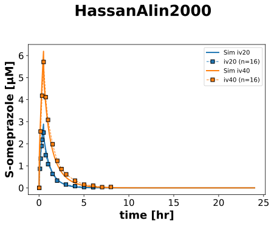
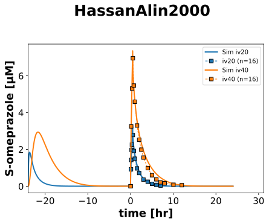
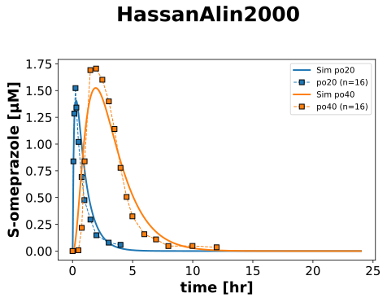
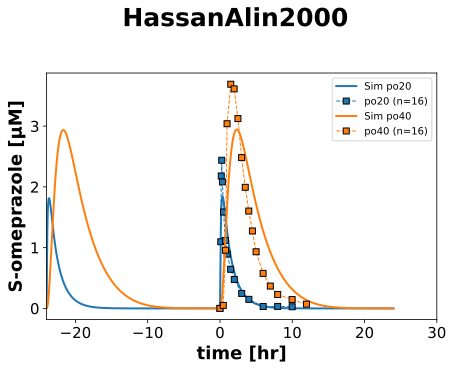

Overview
Models
| model | source |
|---|---|
| model | omeprazole_body_flat.xml |
Datasets
| dataset | file |
|---|---|
| IV20_FIRST | datasets/HassanAlin2000_IV20_FIRST.tsv |
| IV20_SECOND | datasets/HassanAlin2000_IV20_SECOND.tsv |
| IV40_FIRST | datasets/HassanAlin2000_IV40_FIRST.tsv |
| IV40_SECOND | datasets/HassanAlin2000_IV40_SECOND.tsv |
| PO20_FIRST | datasets/HassanAlin2000_PO20_FIRST.tsv |
| PO20_SECOND | datasets/HassanAlin2000_PO20_SECOND.tsv |
| PO40_FIRST | datasets/HassanAlin2000_PO40_FIRST.tsv |
| PO40_SECOND | datasets/HassanAlin2000_PO40_SECOND.tsv |
Figures (4)








Code
"""Simulation experiment of the study HassanAlin2000."""
from typing import ClassVar, override
from pkpdsim.metadata import (
ApplicationForm,
Dosing,
Fasting,
Health,
PKPDMappingMetaData,
Route,
Tissue,
)
from sbmlsim import Q
from sbmlsim.data import DataSet
from sbmlsim.fit import FitData, FitMapping
from sbmlsim.plot import Axis, Figure
from sbmlsim.simulation import Change, Simulation
from sbmlsim.units import Quantity
from pkdb_models.models.omeprazole import MODEL
from pkdb_models.models.omeprazole.experiments.base_experiment import (
OmeprazoleSimulationExperiment,
)
class HassanAlin2000(OmeprazoleSimulationExperiment):
"""Simulation experiment of Hassan-Alin2000.
Esomeprazole (S-omeprazole) in two studies of 16 healthy subjects each:
study A 20 mg (16 men, 76 kg), study B 40 mg (8 men, 8 women, 72 kg).
- Day 1: an intravenous infusion over 30 min (Fig1, `*_FIRST`).
- After a washout of 5 to 14 days an oral dose once daily for 5 days
(Fig2, first and fifth dose) and a second infusion on day 6, 24 hr after
the fifth oral dose (Fig1, `IV*_SECOND`).
The oral 20 mg dose is a solution of the sodium salt, the beaker rinsed
with bicarbonate buffer (a buffered solution), the 40 mg dose
enteric-coated pellets in a capsule. Fasted overnight, meals 4, 7 and
10 hr after the dose. The concentrations below the limit of quantification
(25 nmol/l) after 6 hr are not in the data.
"""
dset_ids: ClassVar[list[str]] = [
"IV20_FIRST", # Fig1
"IV20_SECOND", # Fig1
"IV40_FIRST", # Fig1
"IV40_SECOND", # Fig1
"PO20_FIRST", # Fig2
"PO20_SECOND", # Fig2
"PO40_FIRST", # Fig2
"PO40_SECOND", # Fig2
]
#: oral application form by dose [mg]
forms: ClassVar[dict[int, ApplicationForm]] = {
20: ApplicationForm.BUFFERED_SOLUTION,
40: ApplicationForm.CAPSULE,
}
#: body weight [kg] by dose: study A (20 mg), study B (40 mg)
bodyweights: ClassVar[dict[int, float]] = {20: 76.0, 40: 72.0}
@override
def datasets(self) -> dict[str, DataSet]:
dsets = {}
for fig_id in ["Fig1", "Fig2"]:
df = self.load_dataframe(fig_id)
for label, df_label in df.groupby("label"):
label = str(label)
dset = DataSet.from_df(df_label, self.ureg)
dsets[label] = dset
return dsets
def _changes(self, dose: int) -> dict[str, Quantity | float]:
"""Get the changes of the subjects and the oral form of a dose.
Args:
dose: the dose of esomeprazole [mg].
Returns:
The body weight and the changes of the oral application form.
"""
return {
**self.default_changes(),
"BW": Q(self.bodyweights[dose], "kg"),
**self.form_changes(self.forms[dose]),
**self.fed_changes(Fasting.FASTED),
}
@override
def simulations(self) -> dict[str, Simulation]:
simulations = {}
day = 24 * 60 # [min]
infusion = 30 # [min]
for dose in [20, 40]:
changes = self._changes(dose)
ri = Q(dose, "mg") / Q(infusion, "min")
ri0 = Q(0, "mg/min")
# oral application, first dose
simulations[f"ome_PO{dose}_FIRST"] = Simulation(
time_unit="min",
end=day,
preinit_changes={**changes, "PODOSE_some": Q(dose, "mg")},
)
# intravenous infusion over 30 min
simulations[f"ome_IV{dose}_FIRST"] = Simulation(
time_unit="min",
end=day,
preinit_changes={**changes, "Ri_some": ri},
changes=[Change(infusion, {"Ri_some": ri0})],
)
# an oral dose every day for 5 days, the fifth dose at time 0
simulations[f"ome_PO{dose}_SECOND"] = Simulation(
time_unit="min",
end=5 * day,
preinit_changes={**changes, "PODOSE_some": Q(dose, "mg")},
changes=[
self.add_doses(
[k * day for k in range(1, 5)], {"PODOSE_some": Q(dose, "mg")}
),
],
time_shift=-4 * day,
)
# an oral dose every day for 5 days, the infusion on day 6 at time 0
simulations[f"ome_IV{dose}_SECOND"] = Simulation(
time_unit="min",
end=6 * day,
preinit_changes={**changes, "PODOSE_some": Q(dose, "mg")},
changes=[
self.add_doses(
[k * day for k in range(1, 5)], {"PODOSE_some": Q(dose, "mg")}
),
Change(5 * day, {"Ri_some": ri}),
Change(5 * day + infusion, {"Ri_some": ri0}),
],
time_shift=-5 * day,
)
return simulations
@override
def fit_mappings(self) -> dict[str, FitMapping]:
mappings = {}
for dset_id in self.dset_ids:
dose = int(dset_id.split("_")[0][2:])
first = dset_id.endswith("_FIRST")
if dset_id.startswith("PO"):
route = Route.PO
form = self.forms[dose]
elif first:
route = Route.IV
form = ApplicationForm.SOLUTION
else:
# oral doses for 5 days, then the infusion
route = Route.MIXED
form = ApplicationForm.MIXED
mappings[f"fm_{dset_id}"] = FitMapping(
self,
reference=FitData(
self,
dataset=dset_id,
xid="time",
yid="mean",
yid_sd=None,
count="count",
),
observable=FitData(
self, task=f"task_ome_{dset_id}", xid="time", yid="[Cve_some]"
),
metadata=PKPDMappingMetaData(
tissue=Tissue.PLASMA,
route=route,
application_form=form,
dosing=Dosing.SINGLE if first else Dosing.MULTIPLE,
health=Health.HEALTHY,
fasting=Fasting.FASTED,
),
)
return mappings
@override
def figures(self) -> dict[str, Figure]:
figures = []
for route, fig_id in [("iv", "Fig1"), ("po", "Fig2")]:
for dosing in ["single", "multi"]:
fig = Figure(
experiment=self, sid=f"{fig_id}_{route}_{dosing}", name=self.sid
)
plots = fig.create_plots(
xaxis=Axis(
self.label_time,
unit=self.unit_time,
min=-24 if dosing == "multi" else None,
),
legend=True,
)
plots[0].set_yaxis(self.label_some, unit=self.unit_ome)
for dset_id in self.dset_ids:
if not dset_id.lower().startswith(route):
continue
if dset_id.endswith("FIRST") != (dosing == "single"):
continue
dose = int(dset_id.split("_")[0][2:])
color = self.dose_colors[dose]
# simulation
plots[0].add_data(
task=f"task_ome_{dset_id}",
xid="time",
yid="[Cve_some]",
label=f"Sim {route}{dose}",
color=color,
)
# datasets
plots[0].add_data(
dataset=dset_id,
xid="time",
yid="mean",
yid_sd=None,
count="count",
label=f"{route}{dose}",
color=color,
)
figures.append(fig)
return self.figures_by_sid(*figures)
if __name__ == "__main__":
MODEL.run_experiments(HassanAlin2000, output_dir=HassanAlin2000.__name__)